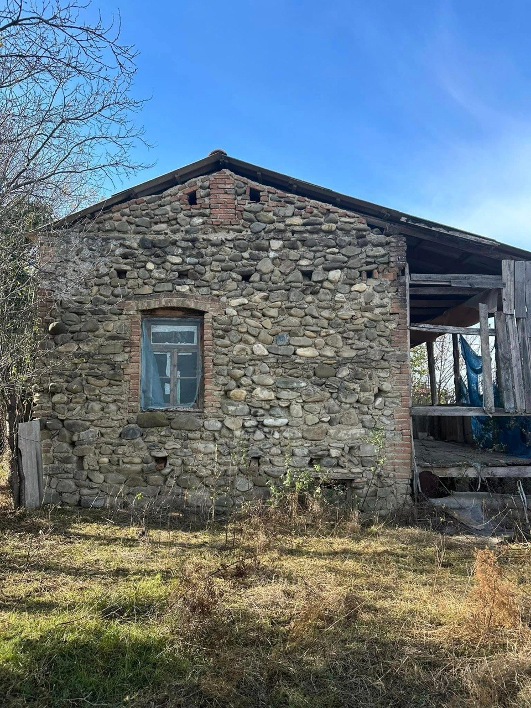
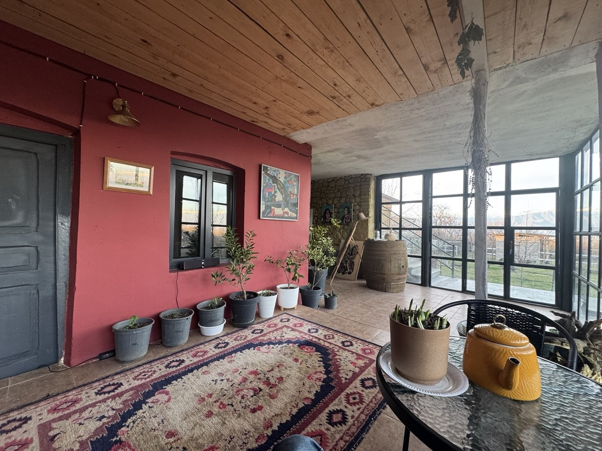
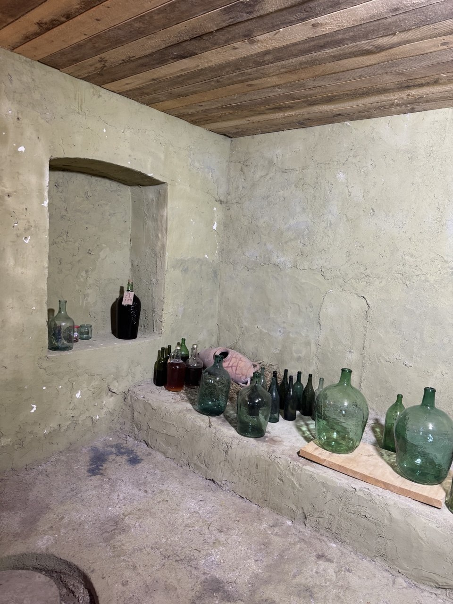
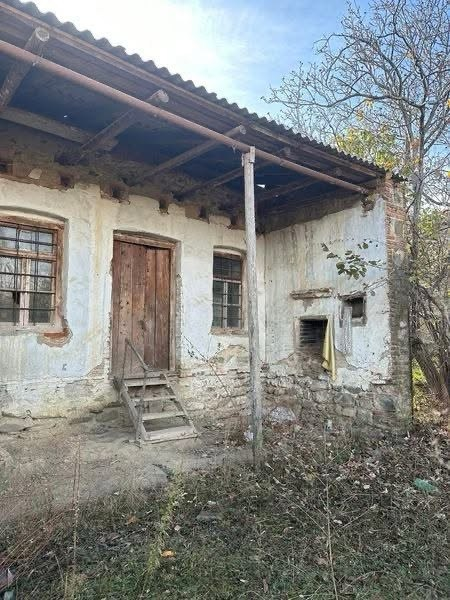
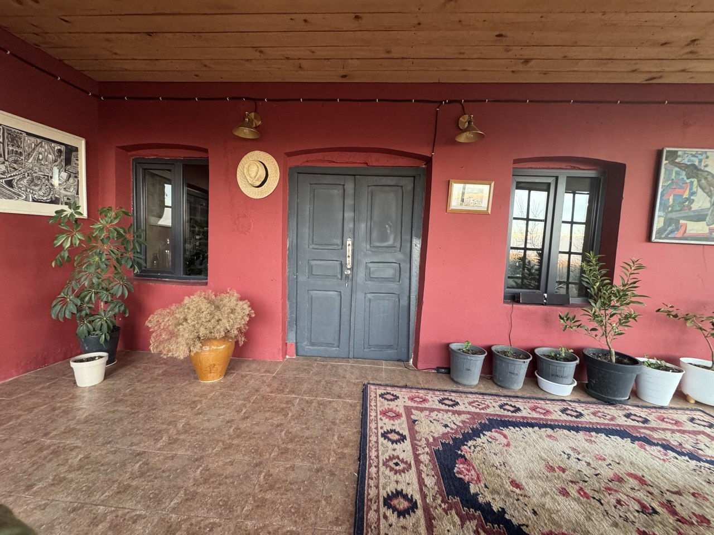
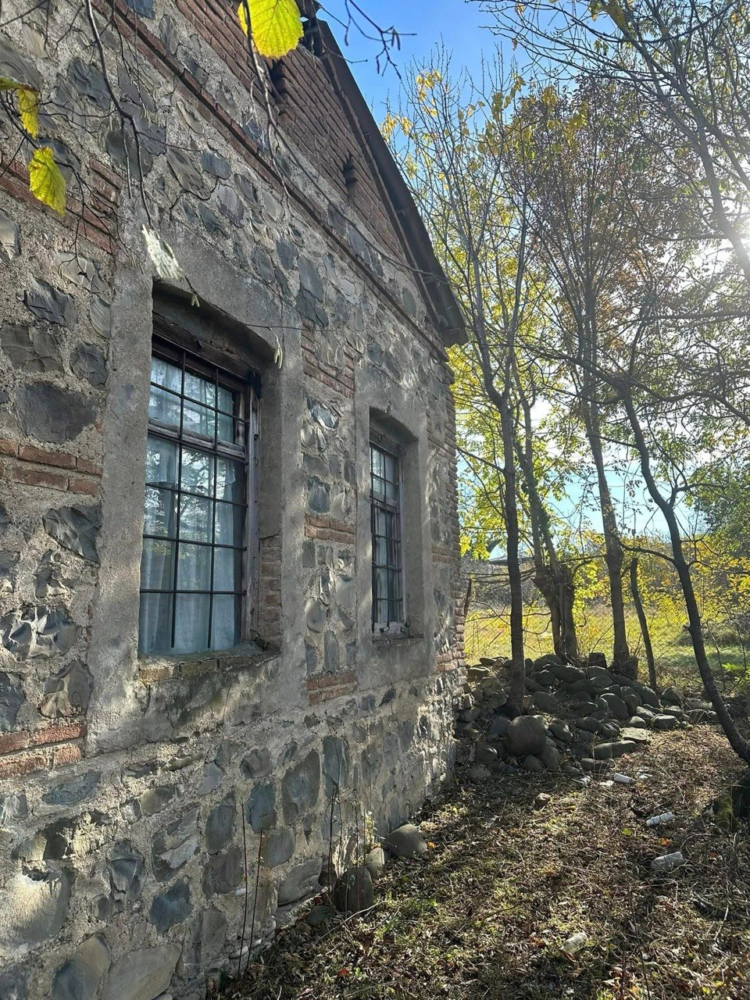

C1 / Ledger Classic
самый ясный и SEO-дружелюбный
Atelier Sweet Home
Тбилиси · Кахетия · Грузия
Старый дом может стать теплым, светлым и удобным.
Покажите дом по фотографиям. Мы скажем, что видно, чего не видно и есть ли смысл двигаться к разговору или осмотру.
Смотримкрыша, стены, дерево, влага, полы, коммуникации
Решаемчто сохранить, что усилить, что заменить
Честнобез точной сметы по фото и fake "под ключ"




C2 / Photo Ledger
больше жизни и реального материала
Atelier Sweet Home
reconstruction / old houses
Сначала смотрим на сам дом.
Камень, кирпич, дерево, крыша, проемы и следы влаги часто говорят больше, чем описание "дом старый, нужен ремонт".

01фотографии не заменяют осмотр
02но помогают понять характер задачи
03дальше решаем: разговор или выезд
C3 / Dark Insert Ledger
C + тёмный акцент из B
Atelier Sweet Home
проверка · решение · работа
Главный вопрос не «сколько стоит метр».
В старом доме сначала нужно понять, держит ли он сам себя: крыша, стены, дерево, влага, полы и коммуникации.
Темная вставка добавляет силу B, но базовая структура остается C.
